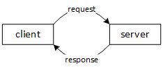
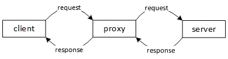
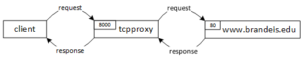

This project must be written in C and must compile (with gcc) and run on one of the iMacs in the Vertica Lounge. (click here for a list of available machines).
You must include a Makefile for compiling from the command line (you are free to use an IDE during development but your grader will expect to type `make tcpproxy` to build your project).
Also you must include a README file that contains a description of your implementation and any issues your code might have. This is an individual project and all submitted work must be your own. To this effect, to receive any credit, you will have to include in your README a statement, attesting the submitted work is yours. So while you are allowed to discuss your solution with other students, make sure you do not share your code. If you have extensive discussions with another student, please indicate this in your README file.
The project this semester will be the design, development, and performance testing of a proxy server. We will accomplish this in multiple stages (called milestones). In this first milestone, you will implement a simple, single-threaded server that can proxy any TCP/IP communication from one remote client to one remote host/server. You will use non-blocking socket communication and the basic C skills described in the tutorial.
Your TCP proxy server will allow remote clients to communicate with a single remote host/server as though the proxy server were that server. Sometimes this can be used to get around security restrictions (since it can make a client appear to originate from a different network). There are less nefarious uses for proxy servers like caching server responses to improve performance, but for now we will just discuss the technical details of what it means to be a proxy server.
Say that a client on remote host C wants to communicate with a server on remote host S. Once a TCP socket is established between C and S, C can send requests to S, and S can respond. The communication channel is bidirectional, meaning that both hosts can be sending at the same time.

The introduction of a TCP proxy server P that is configured to act as a proxy for S means that C can communicate with S by connecting to P. S will think that it is communicating with P, effectively hiding the existence of C.

This also hides the existence of the server from the client, and so this kind of proxy is sometimes used as a sort of gateway between clients outside a network and servers inside the network.
Your proxy server (P above) must avoid blocking on a socket which will not produce output. This means that you must check both the client and server sockets for their ready state before attempting a read or write.
Your proxy server must use fixed-size buffers between the client and server. This means that your server can proxy requests and responses of any size without consuming unbounded resources on the machine where the server is running.
Your proxy server will serve only one client at a time. An industrial strength proxy server needs to serve an arbitrary number of simultaneous clients. You may want to consider what would it take to do this.
Your proxy program should be called tcpproxy. It should accept the following positional arguments on the command line when it is invoked:
Your proxy server will listen for incoming connections from clients on proxy_server_port. After accepting a new client, your proxy server will open a new connection to remote_host using remote_port, and proxy communications between the remote host and remote client.
Here is an example of invoking tcpproxy to listen for incoming clients on port 8000 and to proxy those clients to the web server www.brandeis.edu over port 80 (the standard HTTP port):
./tcpproxy www.brandeis.edu 80 8000

When invoked with no arguments or incorrect arguments, tcpproxy should output usage instructions:
Usage: tcpproxy remote_host remote_port proxy_server_port
When you attempt to read from a socket into a buffer, or write from a buffer into a socket, the operating system may not read or write all the bytes you requested. This often happens with read, because there may simply not be enough data left in server's response to fill up the entire buffer you provided. However, it can also happen with write! When the operating system writes fewer bytes than you requested, it is called a short write.
You can detect a short write by comparing the number of bytes written by write to the number of bytes you requested to be written. The number of bytes actually written is the return value from write. The following code can detect both errors and short writes (but doesn't tell you what to do with them!)
if((n = write(fd, buf, used)) < 0) {
// error!
} else if(n < used) {
// the operating system couldn't write all the bytes we asked it to!
}
It is up to you to figure out how to solve the short writes problem.
The remote client and remote server of your TCP proxy server may at some point itself block, waiting for data from the other remote host. Since your TCP proxy server does not have knowledge of the application-level protocol being followed by the remote hosts, it is possible for a read from one of the hosts to block indefinitely (if that host is itself waiting for more data before it sends again). Using asynchronous I/O solves this problem, because it allows your proxy server to read and write from ready sockets, and to only block when there is no I/O to do.
You will use select or poll to accomplish asynchrony. A comprehensive discussion of select is given in this handout. You can also read how to use them in their respective man pages (man 2 select and man 2 poll).
We recommend you use select unless you are familiar with how to read and understand APIs, since you have more documentation on select at your disposal. The benefit of using poll, if you choose to use it, is that it has a slightly more convenient and efficient interface for this particular problem (non-blocking I/O with a small number of sockets).
The purpose of select and poll is to block until at least one of a set of sockets (represented by file descriptors) is ready for I/O. Once at least one socket is ready, you are given a data structure to search that tells you which sockets are ready. You can then perform read and write without the danger of blocking indefinitely.
You must use fixed-size buffers for proxying between the two remote hosts. This means that you cannot necessarily allocate a buffer that is large enough to hold an entire request or response. Also, if one of the remote hosts (either the client or the server) is significantly faster than the other remote host, then you may run into a situation where you need to write into a buffer that is still partially-filled from a previous read (i.e., because of short writes).
One way for your proxy server to handle this is to read from one host (host A) into a buffer, then write the entirety of that buffer to the other host (host B) before reading again from host A (taking care to handle short writes appropriately). This approach is acceptable for this milestone.
The way this problem is often solved in industrial strength code is to use a circular buffer (also called a "ring buffer"). In a circular buffer, you can call read from the head of the buffer and write to the tail of the buffer, wrapping around the edges of the memory allocated to the buffer as though it were a single continuous ring. This greatly simplifies the process of managing the buffer space. However, circular buffers are very tricky to implement and test. This project does not require a circular buffer; but, a future project might. So, if you want to try implementing a circular buffer you can get feedback on it as part of this project.
Refer to the code provided as part of the tutorial, as well as the very useful handout also linked on the tutorial page.
Here is a sample function to make any open socket ready for asynchronous I/O (you need to call this on sockets you want to use with select or poll):
int make_async(int s) {
int n;
if((n = fcntl(s, F_GETFL)) == -1 || fcntl(s, F_SETFL, n | O_NONBLOCK) == -1)
perr("fcntl");
n = 1;
if(setsockopt(s, SOL_SOCKET, SO_KEEPALIVE, &n, sizeof(n)) == -1)
perr("setsockopt");
return 0;
err:
return -1;
}
To call select, you initialize two fd_sets which list the sockets that you would like to read from or write to, and then loop over those arrays to find sockets which are ready for reading or writing. Essentially, you specify intent in the input arrays, and select updates those arrays with socket ready states. You will want to adapt the following code into a utility library to make managing asynchrony easy (use this for inspiration, don't copy and paste it into your program).
int fd, n_ready;
fd_set r_ready, w_ready;
FD_ZERO(&r_ready);
FD_ZERO(&w_ready);
// Set intent to read and write for the remote client and remote server
// if and only if you have data to write or free space in a buffer into
// which to read. If your program doesn't intend to do a particular I/O
// with a socket, don't FD_SET that intent in r_ready or w_ready.
//
if(space_in_remote_client_read_buffer)
FD_SET(remote_client, &r_ready);
if(data_in_remote_client_write_buffer)
FD_SET(remote_client, &w_ready);
if(space_in_remote_server_read_buffer)
FD_SET(remote_server, &r_ready);
if(data_in_remote_server_write_buffer)
FD_SET(remote_server, &w_ready);
// select will block until at least one socket is ready.
//
if((n_ready = select(FD_SETSIZE, &r_ready, &w_ready, NULL, NULL)) < 0)
pdie("select");
// Loop over r_ready and w_ready to see which clients are ready for I/O
// n_ready is set to the total number of reads and writes the sockets
// are ready for, so we decrement it every time we find a ready socket,
// and terminate the loop once we have handled all ready sockets.
//
for(fd = 0; n_ready > 0 && fd < FD_SETSIZE; ++fd) {
if(FD_ISSET(fd, &r_ready)) {
--n_ready;
// do the read
}
if(FD_ISSET(fd, &w_ready)) {
--n_ready;
// do the write
}
}
poll can be a little more efficient in this case because we can ask it to check only two file descriptors, instead of an entire fd_set. The basic recipe is like this (again, use this for inspiration, don't copy and paste it into your program):
struct pollfd pollfds[2];
pollfds[0].fd = remote_client;
pollfds[0].events = pollfds[0].revents = 0;
pollfds[1].fd = remote_server;
pollfds[1].events = pollfds[1].revents = 0;
// Set intent in the events member of each pollfd struct
//
if(space_in_remote_client_read_buffer)
pollfds[0].events |= POLLIN;
if(data_in_remote_client_write_buffer)
pollfds[0].events |= POLLOUT;
if(space_in_remote_server_read_buffer)
pollfds[1].events |= POLLIN;
if(data_in_remote_server_write_buffer)
pollfds[1].events |= POLLOUT;
if(poll(pollfds, 2, -1) < 0)
pdie("poll");
// Read the ready state in the revents member of each pollfd struct
//
if(pollfds[0].revents & POLLIN) {
// do the read from the remote client
}
if(pollfds[0].revents & POLLOUT) {
// do the write to the remote client
}
if(pollfds[1].revents & POLLIN) {
// do the read from the remote server
}
if(pollfds[1].revents & POLLOUT) {
// do the write to th remote server
}
You can probably think of more elegant ways to do either the select or poll loops. Please do your best to design an elegant, modular solution that avoids duplicating code and makes testing easy. This is one of the most important practical skills to work on as a systems developer.
Please remember to test you solution on one of the iMacs in the Vertica Lounge before you submit.
You should be able to access a web page through your proxy server. To test this at the command line, invoke tcpproxy to proxy the Brandeis web server:
./tcpproxy www.brandeis.edu 80 8000
Then, in another terminal window, use telnet to request the homepage (notice that we telnet to the proxy host and port, not directly to theBrandeis web server):
telnet localhost 8000 Trying 127.0.0.1... Connected to localhost. Escape character is '^]'. GET /
You should also test with some binary data. An image is a good choice. Keep your proxy running. Find an image on the CS department homepage, maybe this one:
http://www.cs.brandeis.edu/wp-content/themes/twentyten/images/headers/path.jpg
Then replace the hostname with "localhost:8000" to use your TCP proxy server instead. Firefox should still be able to load the image, but this time through your proxy instead of directly from the department's web server.
http://localhost:8000/wp-content/themes/twentyten/images/headers/path.jpg
Some websites may not work correctly if accessed using your web browser through your TCP proxy server. This is because your web browser puts the name of the server it is communicating with in HTTP requests, and some web servers use that host name to figure out which web site the client is accessing (servers that use this are employing what's called named-based virtual hosts). You should at least be able to read HTML files via HTTP/0.9 using telnet and images by directly accessing them by filename in your web browser.